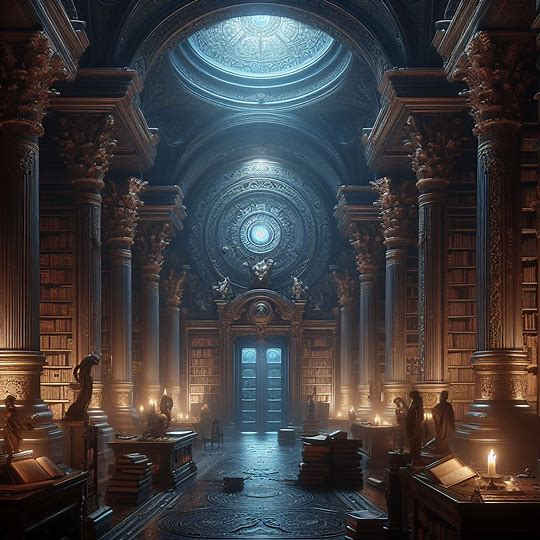

The Rainbow of Velaris is Velaris's artists' quarter, home to the
performing artists: the musicians, the dancers, the actors. It is a
brightly painted pocket of the city, built atop one of the hills
that flowed right to the Sidra River's edge. In the Rainbow of
Velaris can be found a hundred galleries, supply stores, potters'
compounds, sculpture gardens, and anything in between. In this
quarter is located a building with a golden top, the most famous of
the five main theaters in the city.
The Library

Priestesses Sanctuary
This library has been around for many years and was built inside a
cavern carved out of the mountain where the House of Wind stands. It
has levels and levels of shelving with reading rooms and hallways
lit by lamps. Also in some areas away from books, there are
fireplaces.
Background Story
At some point, Morrigan found an extremely injured woman named
Clotho and took her to Rhysand, the High Lord of the Night Court,
who was in the library. He was able to access her mind thanks to his
daemati powers and saw that a group of men had tortured her for fun
and had cut her tongue so that she could not identify them and
crushed her hands so that she could not write their names. Thanks to
his powers, Rhys found out who they were and allowed Mor to hunt
them down.
Clotho became a priestess and stayed to live forever in the library
along with the other priestesses who worked and lived there, about a
dozen, who were the ones who decided who could enter and who could
not.
On the lower level of the library there is a dark well where Bryaxis
lives, a creature whose form no one knows. Once Rhys challenged
Cassian to go down there and he did it, he immediately came back,
pale and refusing to talk about what he had seen. To this day he
refuses to do so and if asked about it he loses the ability to speak
for a few hours.
The Sidra River
The Sidra
The Sidra River winds its way through Prythian, a land divided into
various faerie courts. It serves as a natural boundary between some
of these courts, marking both territorial divisions and points of
connection.
Like many elements in Prythian, the Sidra is imbued with magic. Its
waters are said to possess healing properties, and it's not uncommon
for characters in the series to seek solace or renewal by its banks.
The Sidra River, or simply known as the Sidra is a broad, winding river sparkling like deepest sapphire that flows through Velaris and sank into the sea gulf of the city. The Sidra is loitered by ships with sails of varying shapes, making it navigable. Two Palaces are located on the southern side of the Sidra and another two on the northern. Amren's apartment has a view of the Sidra River.